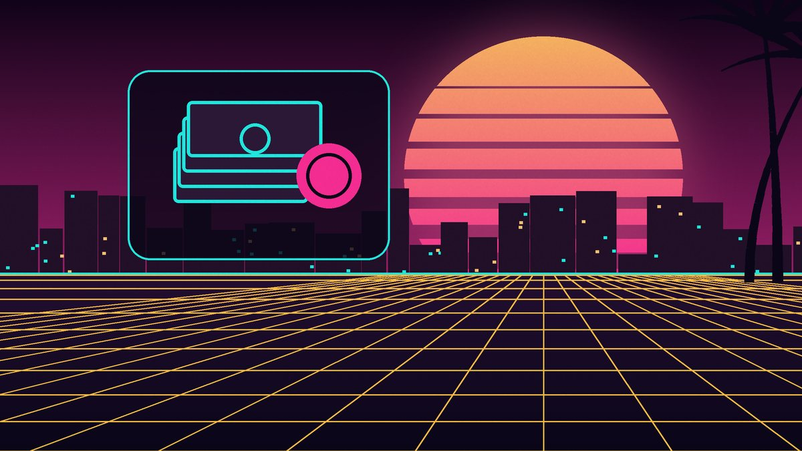

Guía para asaltar tiendas en modo libre: del almacén de bienes ilegales a la joyería de la esquina
Leonida está llena de tiendas y almacenes que se pueden robar sin esperar a ninguna misión. Esto es lo que hay dentro de uno de ellos y cómo sacarle partido a cualquier otro.
Por Redacción Golpe Diario · Publicado el

Qué ha pasado
Además de los grandes golpes de la historia, el mapa de GTA 6 marca decenas de oportunidades de robo sueltas, que se pueden repetir en modo libre sin avanzar la trama. Una de las más completas es la tienda de bienes ilegales de la banda PTT Youngin's, en el norte de Southside, al sur de la VCIA, según la guía de GameRant: un almacén grande rodeado de valla con alambre de espino.
Para entrar sin pelear, GameRant recomienda llevar un arma silenciada y rodear el edificio hasta una puerta lateral abierta, que lleva directa a la nave. Dentro hay un cultivo de marihuana enorme en el centro y, en el lado contrario, una mesa con fajos de billetes marcados y sin marcar que conviene coger antes de entrar en la oficina. Dentro de la oficina, sobre otra mesa y con una lámpara de escritorio señalándola, está la Eris Fresh DSG SMG, un subfusil único. Junto a la puerta del garaje, fuera de la oficina, espera una moto personalizada, la Maibatsu Tropical Manchez, y cerca de la puerta de la oficina hay también joyas sueltas sobre una mesa.
Esa misma mecánica sirve para las tiendas de empeño y las joyerías normales, repartidas por todo el mapa. Power Up Gaming explica el proceso: localizar el local, controlar a los empleados que haya dentro, romper los mostradores y vaciarlos, y revisar la trastienda, donde suele haber una caja fuerte con botín extra. La combinación de cuatro cifras de esa caja está casi siempre en una nota o un tablón dentro del propio local, aunque también se puede amenazar a un empleado para que la diga.
La seguridad varía de una tienda a otra. Muchas tienen cámaras y alarma, y hay que desactivarlas a mano; la Snap Gun, que se desbloquea al entregar el primer encargo de los trabajos de Yasmani, permite forzar la puerta de atrás sin que salte la alarma de la entrada, aunque la cámara interior también hay que desactivarla a mano. Lo robado en una joyería no se convierte en dinero al momento: hay que vendérselo a un perista, y Power Up Gaming avisa de que cada uno paga distinto, así que conviene comparar antes de soltar el botín.
Qué significa para ti
- Para la tienda de PTT Youngin's, ve con un arma silenciada y busca la puerta lateral abierta: evitas la pelea y llegas directo a la nave.
- Antes de entrar en la oficina, pasa por la mesa de billetes del lado contrario al cultivo: es fácil dejarla atrás.
- En cualquier tienda de empeño o joyería, revisa siempre la trastienda: ahí está la caja fuerte con el botín extra.
- Busca el código de la caja en notas o tablones del propio local antes de amenazar a nadie.
- El botín de joyería no es dinero directo: véndelo a un perista y compara precios, porque cada uno paga distinto.
Contrastado con: GameRant · Power Up Gaming
Sigue leyendo
El almacén al este de Hamlet: unos 13.000 dólares y tres armas sin pegar un tiro
Es una nave de South Vice-Dale County, a las afueras de Hamlet, y cuando llegas los que la guardaban ya están muertos. Hay una bolsa con 6.000 dólares en billetes marcados, paquetes de cocaína, tres armas y una carta de coleccionista que en la casa de empeños paga otros 6.000.
Cómo ganar dinero rápido en las primeras horas de GTA 6: lo que de verdad paga
Los medios que ya han jugado coinciden en que asaltar las operaciones ilegales del mapa paga mucho mejor que robar coches en los capítulos 1 y 2. Esta es la lista de métodos, lo que pagan según cada fuente y lo que hay que desbloquear antes.
Si te matan o te detienen pierdes todo el dinero que llevas encima: así se salva
En GTA 6 el dinero vive en dos sitios: el del bolsillo y el de la cuenta del banco. Lo avisó el propio Rob Nelson, de Rockstar, antes del estreno: sin ingresarlo, ese efectivo desaparece en cuanto caes.